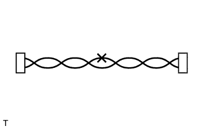
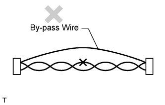
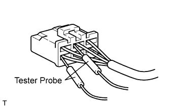
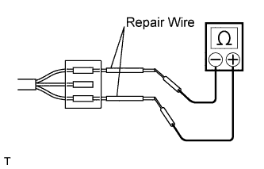

CAN COMMUNICATION SYSTEM (for RHD) > PRECAUTION |
| 1.STEERING SYSTEM HANDLING PRECAUTIONS |
Care must be taken when replacing parts. Incorrect replacement could affect the performance of the steering system and result in hazards when driving.
| 2.SRS AIRBAG SYSTEM HANDLING PRECAUTIONS |
This vehicle is equipped with an SRS (Supplemental Restraint System), such as the driver airbag and front passenger airbag. Failure to carry out service operations in the correct sequence could cause unexpected SRS deployment during servicing and may lead to a serious accident. Before servicing (including installation/removal, inspection and replacement of parts), be sure to read the precautionary notice for the Supplemental Restraint System (Click here).
| 3.BUS LINE REPAIR |
 |
After repairing the bus line with solder, wrap the repaired part with vinyl tape (Click here).
 |
Do not use by-pass wiring between the connectors.
| 4.CONNECTOR HANDLING |
 |
When inserting probes into a connector, insert them from the rear of the connector.
 |
Use a repair wire to check the connector if it is impossible to check resistance from the rear of the connector.